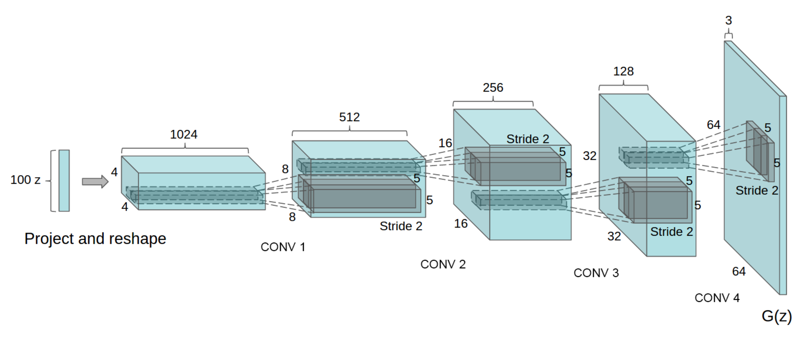

Deep Convolutional GAN (DCGAN)
Goal
In this notebook, you’re going to create another GAN using the MNIST dataset. You will implement a Deep Convolutional GAN (DCGAN), a very successful and influential GAN model developed in 2015.
Note: here is the paper if you are interested! It might look dense now, but soon you’ll be able to understand many parts of it :)
Learning Objectives
- Get hands-on experience making a widely used GAN: Deep Convolutional GAN (DCGAN).
- Train a powerful generative model.

Figure: Architectural drawing of a generator from DCGAN from Radford et al (2016).
Getting Started
DCGAN
Here are the main features of DCGAN (don’t worry about memorizing these, you will be guided through the implementation!):